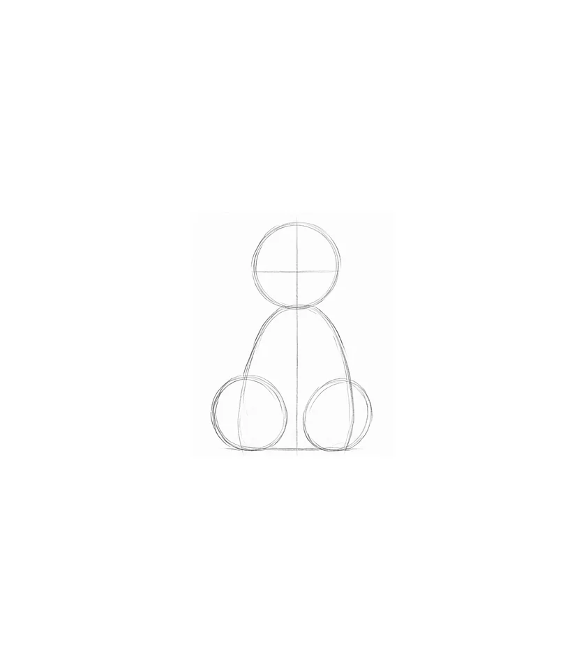

Minha aula atual
Gato sentado
Do esboço à arte-final, em dez etapas.
Prancheta de desenho
ETAPA 1 / 6Modo leitura: passe o dedo sobre a imagem para rolar a página. Ative Desenhar para praticar.

Notou dedos incorretos ou partes cortadas na ilustração?Registrar problema nesta aula
Toque nas miniaturas ou use as setas do teclado. O modo leitura evita traços acidentais durante a rolagem; seus desenhos permanecem salvos neste navegador.
ETAPA 125 minutos
Primeiro traço
✦ Dica da artistaUse traços leves e observe a forma.
Exercícios desta etapa 0/3
✿ Nas novas aulas, o desenho foi separado do texto explicativo. Você pode praticar no papel ou diretamente na prancheta. Nas aulas progressivas, as etapas acompanham o mesmo desenho. Nas oficinas de referências, cada etapa é um exercício independente.
♡ Acompanhe sua evolução
Escolha uma aula e experimente desenhar.
Biblioteca de aulas
Aulas progressivas e oficinas de observação; escolha um exercício e pratique no seu ritmo.
MangaDojo Atelier 13.6.0 · Academia gratuita